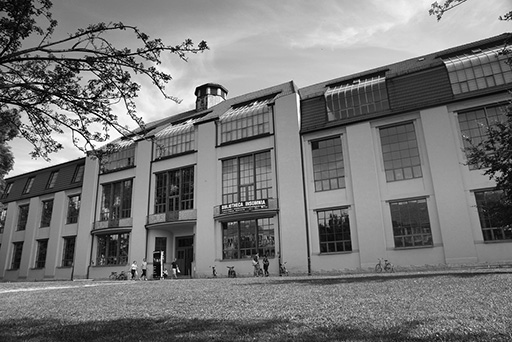
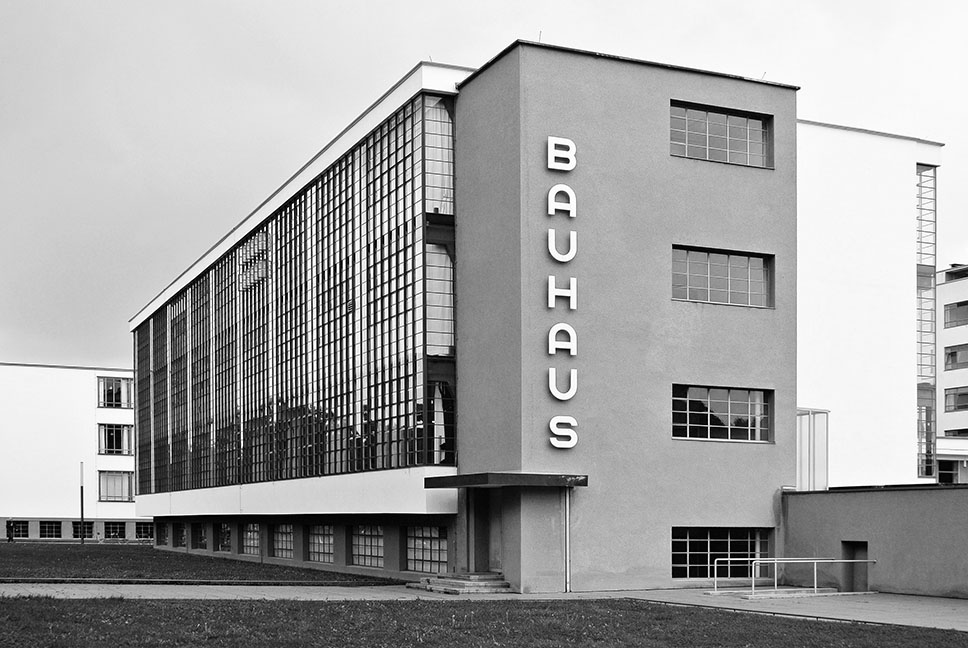
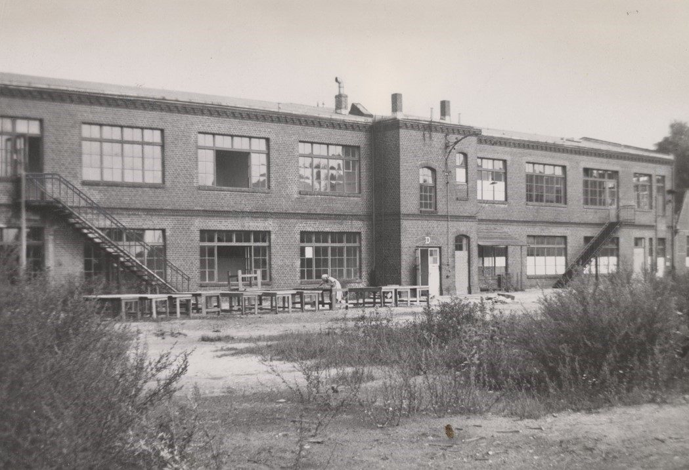
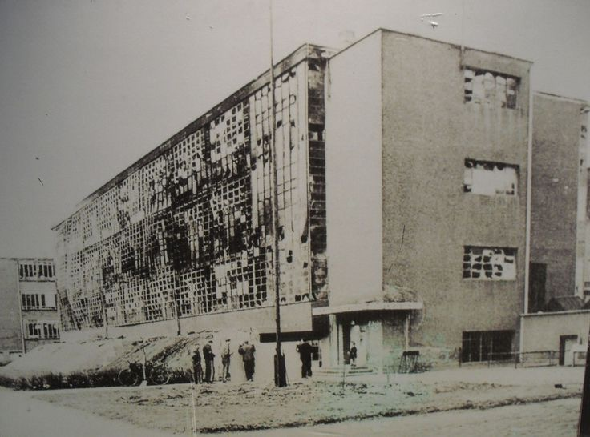

Founded by architect Walter Gropius on April 1, 1919, in Weimar, Germany, the Bauhaus emerged from the merger of two existing art institutions. Gropius envisioned a new approach to education that united fine art, applied art, and craftsmanship, breaking down the traditional boundaries between artists and craftspeople.
The school's early curriculum emphasized experimentation with color, form, and materials. Painter Johannes Itten introduced the Vorkurs, or preliminary course, which established the foundations of Bauhaus education. By 1923, the school began shifting toward functional design and industrial production, reflecting the technological developments of modern society.
Growing political opposition and funding cuts in 1924 eventually forced the Bauhaus to seek a new location.

In 1925, the Bauhaus relocated to Dessau, where Walter Gropius designed a new school building that opened in 1926. Its modern architecture reflected the school's growing emphasis on functionality, technology, and industrial production.
The Dessau period brought significant changes in the school's direction. Under Hannes Meyer (1928–1930), design increasingly focused on affordability and practical social needs. His successor, Ludwig Mies van der Rohe (1930–1932), attempted to maintain the school amid growing political instability.
In 1932, following increased Nazi influence, the Dessau city council voted to close the institution, forcing another relocation.

Following its closure in Dessau, the Bauhaus moved to Berlin in late 1932. Under Mies van der Rohe's leadership, the school continued operating in a former factory building, attempting to preserve its educational activities despite an increasingly hostile political environment.
The Nazi movement strongly opposed Bauhaus modernism, criticizing its international influences and progressive ideals. As political pressure intensified, the school's ability to operate became increasingly uncertain. In 1933, the Gestapo intervened and closed the Berlin institution.

In April 1933, following intervention by the Gestapo, the Bauhaus officially ceased operations. Although Mies van der Rohe initially attempted to negotiate the school's reopening, he and the remaining faculty ultimately agreed to dissolve the institution.
The closure did not end the influence of the Bauhaus. Many faculty members and students emigrated, bringing its approaches to architecture, art, and design to other countries. Mies van der Rohe later moved to Chicago, while other former Bauhaus members contributed to the establishment of the New Bauhaus.
Although the school existed for only fourteen years, its integration of art, craft, and technology profoundly shaped modern architecture and design education.